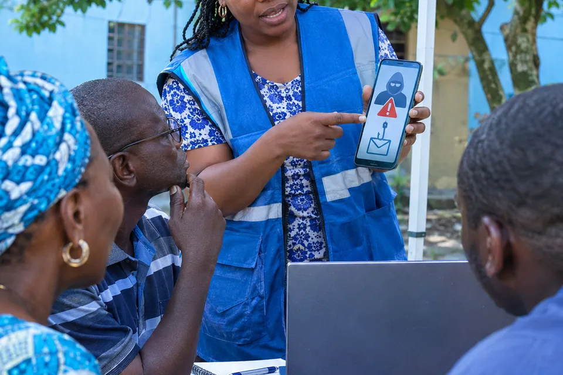

Les ateliers EFA · 46 ateliers
Choisissez un thème. Suivez le parcours, ou piochez.
Chaque thème a son parcours principal, dans l’ordre, puis des ateliers à la carte selon votre situation. Faites glisser les rangées pour tout voir. Vos ateliers commencés restent dans Mon EFA.
Je continue
là où je me suis arrêté6 ateliers
Mon budget au quotidien
Savoir où part l’argent, tenir un budget et se constituer une réserve.
Le parcours
4 étapes, dans l’ordreÀ la carte
selon votre situation8 ateliers
Placer mon épargne
Choisir un placement selon la date de vos projets, et le comprendre avant de signer.
Le parcours
5 étapes, dans l’ordreOù placer une somme dont j’aurai besoin dans 6 mois, 2 ans ou 5 ans ?
14 activitésGratuitÉtape 2DAT, OPCVM, FCPE : les placements expliqués
14 activitésAbonnésÉtape 3Investir dans les placements à revenu fixe
9 activitésAbonnésou 5 000 F à l’unitéÉtape 4Comment fonctionne un fonds commun de placement ?
6 activitésAbonnésou 5 000 F à l’unitéÉtape 5Construire sa stratégie d’investissement
7 activitésAbonnésou 5 000 F à l’unité8 ateliers
La Bourse (BRVM)
De zéro à votre portefeuille : comprendre, choisir une action, construire, encaisser des dividendes.
Le parcours
5 étapes, dans l’ordreMes premiers pas en Bourse
31 activitésAbonnéschapitre 1 offertÉtape 2Acheter sa première action à la BRVM
6 activitésAbonnésou 5 000 F à l’unitéÉtape 3Lire une société cotée comme un investisseur
13 activitésAbonnéschapitre 1 offertÉtape 4Construire son portefeuille à la Bourse
14 activitésAbonnéschapitre 1 offertÉtape 5Un portefeuille qui paie mes factures : la stratégie des dividendes
13 activitésAbonnés10 ateliers
Crédit et dettes
Emprunter quand c’est utile, en connaître le vrai coût, et sortir des dettes.
Le parcours
5 étapes, dans l’ordre5 ateliers
Mon activité
Séparer la caisse de la maison, savoir si l’on gagne vraiment, investir au bon moment.
Le parcours
4 étapes, dans l’ordreÀ la carte
selon votre situation
6 ateliers
Famille et retraite
Préparer sa retraite, financer les études, faire face aux grands moments.
Le parcours
3 étapes, dans l’ordre
2 ateliers
Terrain et logement
Savoir ce que vos revenus permettent, et acheter un lot sans se faire avoir.

4 ateliers
Se protéger des arnaques
Reconnaître la promesse trop belle et le faux conseiller, avant de payer.
Le parcours
3 étapes, dans l’ordreÀ la carte
selon votre situation
Avec Élysée Johnson
Votre cas, avec le fondateur d’EFA.
Des ateliers approfondis où il répond personnellement à votre question, et des rendez-vous pour décider.
Vous ne savez pas par où commencer ? Le diagnostic vous indique le thème qui compte le plus pour vous aujourd’hui, en 3 minutes.
Faire mon diagnostic